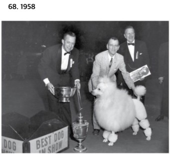

<!DOCTYPE html>
<html></html>
<head>
<title>html</title>
</head>
<body>
<h1><a href="index.html">PUPPY</a></h1>
<ol>
<li><a href="1.html">puddel</a></li>
<li><a href="2.html">history</li>
<li><a href="3.html">mypuppy</li>
</ol>
<h2>history</h2>
,<strong> history2<u> .Poodles are a breed that has existed in Europe for centuries. The German artist Albrecht Dürer created paintings based on poodles, which led to the establishment of popular images of poodles in the 15th and 16th centuries. Rembrandt's portrait of himself with his pet dog, Poodles, in 1631. The breed is presumed to have been not a dog of an ordinary person, but of a wealthy gentleman or royal family.</<p style="margin-top: 400px;"> .</p>
</body>
</html>
